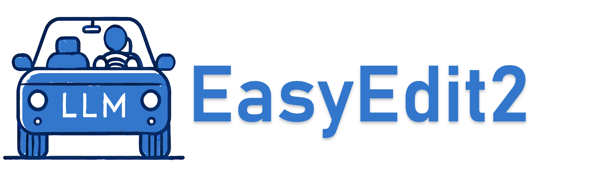
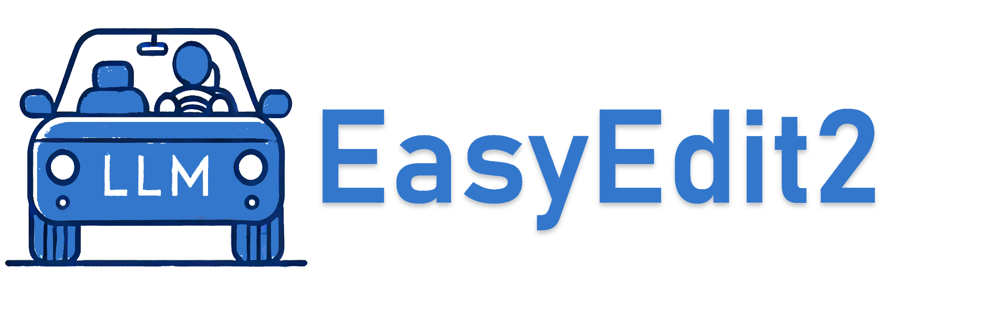

About
What is EasyEdit2
The EasyEdit2 Project
Unlike EasyEdit, which achieves knowledge editing by updating internal parameters or introducing additional parameters, EasyEdit2 enables real-time steering of LLMs during inference. It provides a unified framework for controllability without retraining, seamlessly integrating various steering methods for ease of use and evaluation.
EasyEdit2 enables dynamic LLM steering with three core features:
- Test-Time Control
- Adjustability & Composability
- Versatile Scenarios
Test-Time Control
EasyEdit2 utilizes pluggable steer vectors to enable real-time, training-free control during model inference.
- Pluggable Design - Seamlessly apply or remove steering methods without modifying model weights.
- Inference-Time Control - Steer vectors take effect during inference for real-time adjustments.
- Training Free - Achieve flexible model control without additional training.

Adjustability & Composability
Users can control intervention strength and combine methods for flexible steering.
Versatile Scenarios
EasyEdit2 can be applied to a wide range of applications, including:
- Safety: Strengthen security and ensure compliance.
- Sentiment: Adjust the model's emotions to make it more warm and engaging.
- Personality: Customize the personality of the model.
- Reasoning Pattern: Intervene in reasoning patterns to prevent overthinking.
- Factuality: Keep the model's knowledge up to date.
- Linguistic Feature: Customize language style to suit specific needs.
The overall architecture of EasyEdit2
EasyEdit2 is a steering framework for editing large language models, consisting of four core components: a dataset module for data loading, a methods module for the training and application of steering vectors, a vector library for manipulation and combination of vectors, and an evaluation module with a number of metrics.
GithubGuidance
Usage
from steer import BaseVectorGenerator, BaseVectorApplier
from steer import prepare_train_datasets, prepare_generation_datasets
from omegaconf import OmegaConf
# Load configuration
top_cfg = OmegaConf.load('./hparams/Steer/config.yaml')
# Step 1: Prepare data
train_datasets = {
'CUSTOM_DATASET_NAME': [
{'question': 'How do you feel now?',
'matching': 'As an AI, I don\'t have feelings.',
'not_matching': 'As an AI, I am filled with joy!'},
]
}
generation_datasets = {
'CUSTOM_DATASET_NAME': [
{'input': 'How do you feel about the recent changes?'},
{'input': 'What are your hobbies?'}
]
}
# Step 2: Generate steering vectors
vector_generator = BaseVectorGenerator(top_cfg)
vectors = vector_generator.generate_vectors(train_datasets)
# Step 3: Apply vectors to model
vector_applier = BaseVectorApplier(top_cfg)
for dataset_name in vectors:
vector_applier.apply_vectors(vectors[dataset_name])
# Generate steered outputs
results = vector_applier.generate(generation_datasets)
# Step 4: Reset model
vector_applier.model.reset_all()Quick Start
Four Simple Steps to Steer Model:
- 1 Prepare training data
- 2 Generate steering vectors
- 3 Apply to model
- 4 Verify results
This example demonstrates how to give AI emotional responses (e.g. changing "I have no feelings" to "I feel happy") without affecting other responses.
Citaion
Related works
CAA
Steering Llama 2 via Contrastive Activation Addition

LM-Steer
Word Embeddings Are Steers for Language Models
AxBench
AxBench: Steering LLMs? Even Simple Baselines Outperform Sparse Autoencoders
Scaling and evaluating sparse autoencoders
SAS
Steering Large Language Model Activations in Sparse Spaces
STA
Beyond Prompt Engineering: Robust Behavior Control in LLMs via Steering Target Atoms
Acknowledgments
Our Sincere Thanks
Our sincerest thanks are extended to CAA, LM-Steer, AxBench for their invaluable contributions to our project. We have integrated parts of their source code into our work, and for this, we are deeply appreciative.Furthermore, we are grateful for the ongoing support and collaboration from our community. Special recognition goes to those who have diligently reported issues and shared their technical expertise. Your collective efforts have been instrumental in our project's success. 🙌